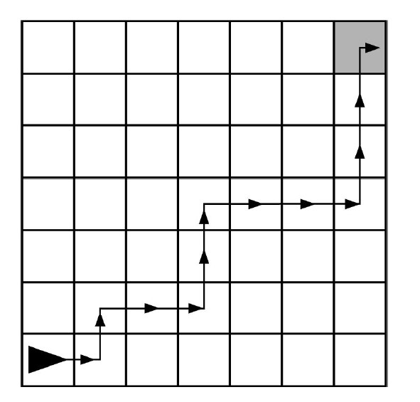

The following grid contains a robot represented as a triangle. The robot is initially facing right.

Which of the following code segments can be used to move the robot to the gray square along the path indicated by the arrows?
The robot needs to move forward, turn left, move forward, and then turn right.
Afterwards, it repeats the same process, but must forward twice instead of once. It does this once more, moving forward three times instead of two.
Our program should increase the number of times the robot moves forward, but not repeat the number of rotations.